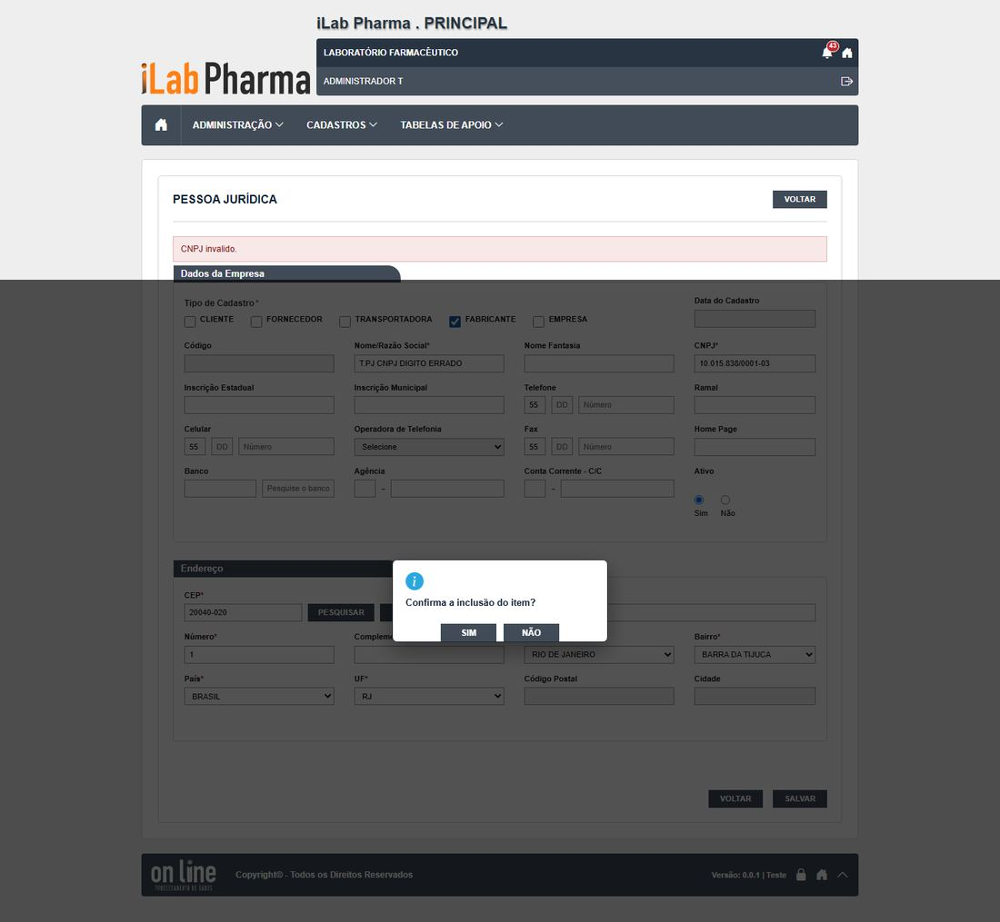
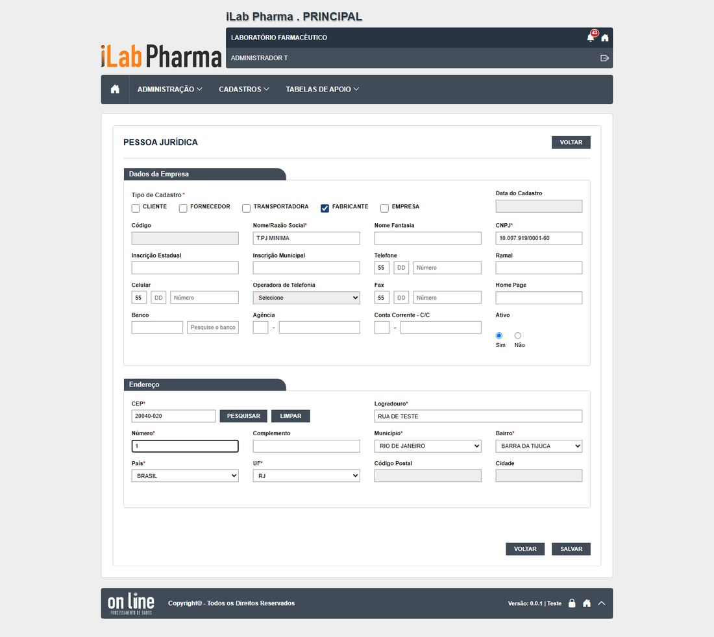
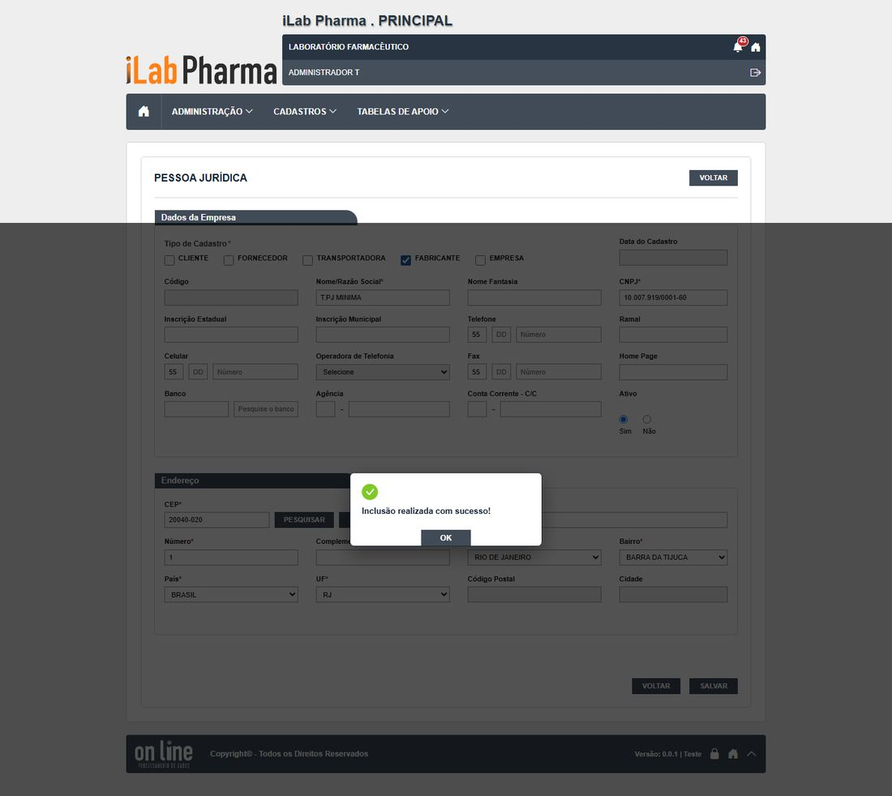
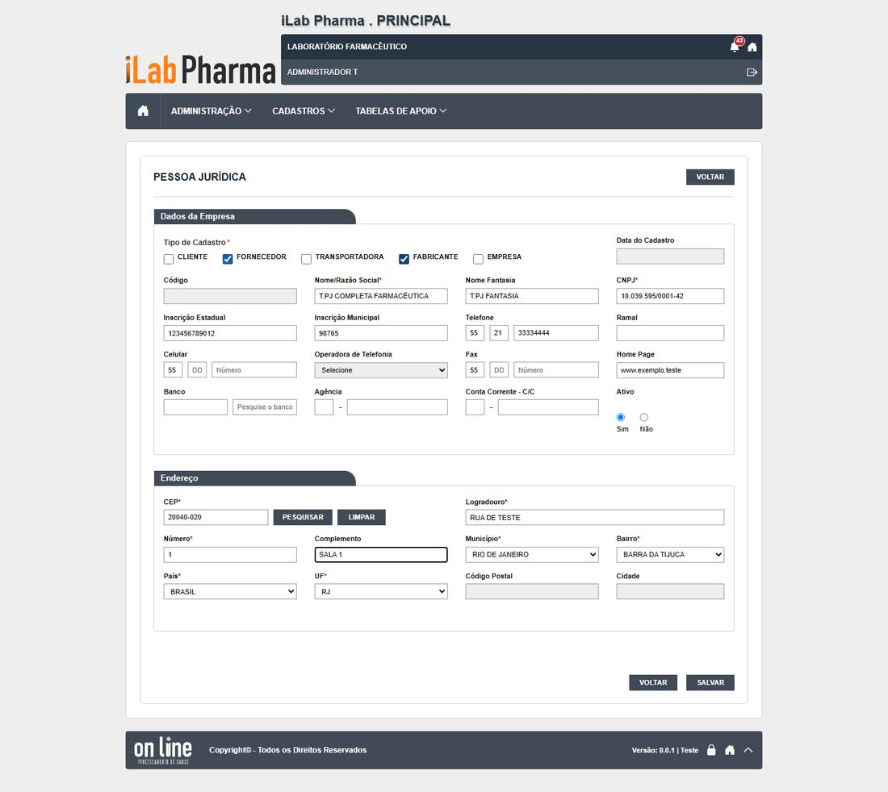
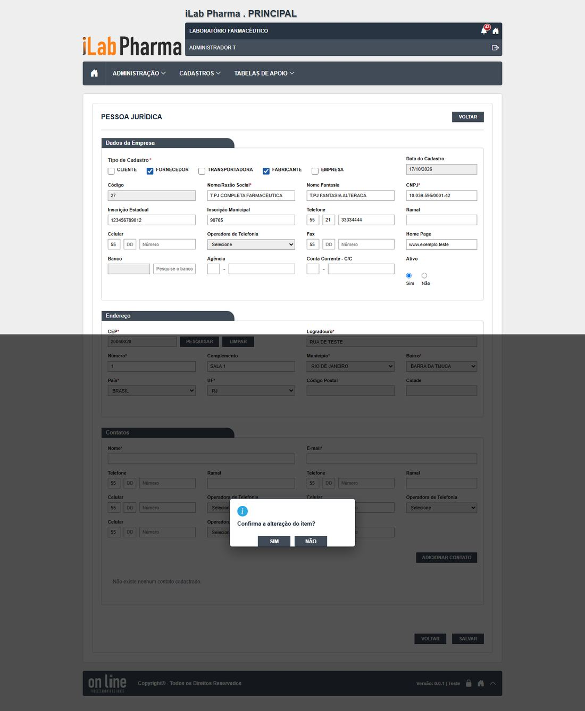
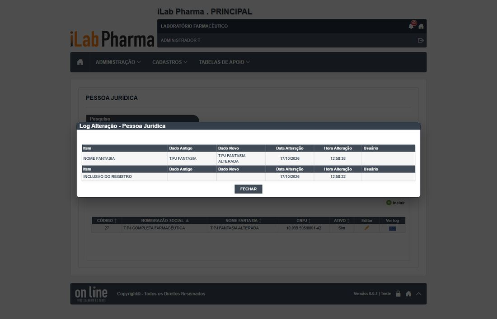
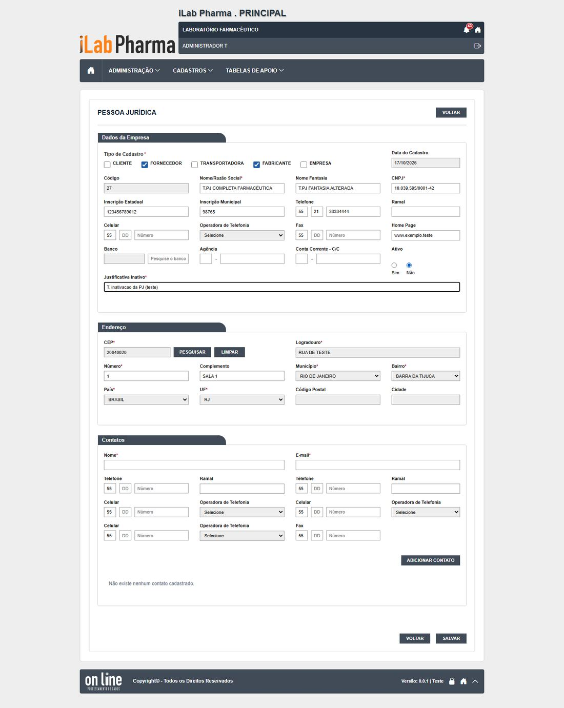
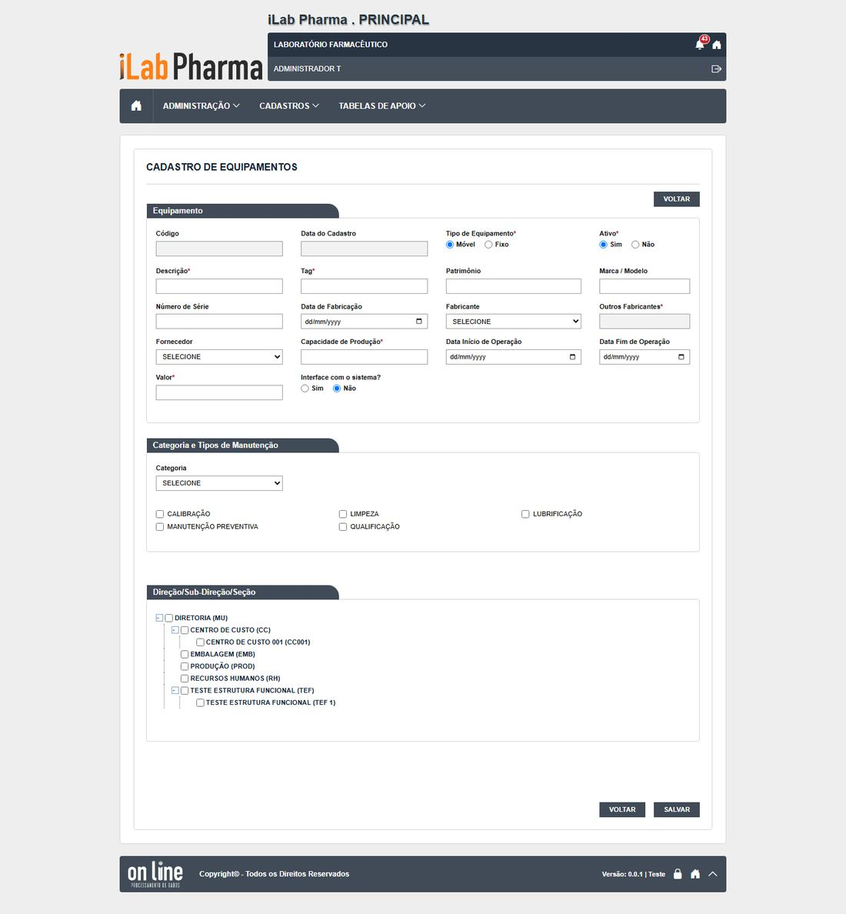
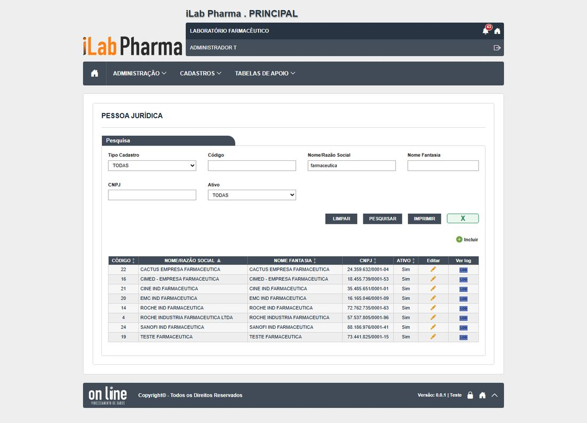

Roteiro para quem vai testar a tela Pessoa jurídica (menu Cadastros) na versão nova. Use o ambiente de teste da versão nova; o sistema entregue só entra se um resultado parecer estranho.
Antes de começar
- Usuário
t.cadastroout.admin. - CNPJs de teste válidos (gerados) e inválidos.
- Todo registro novo começa com
T.(se o ponto falhar, useT-e anote o campo). - Dados de teste ficam no ambiente: não apague o que não criou.
Passos
| # | O que fazer | O que deve aparecer | Caso do plano |
|---|---|---|---|
| 1 | Abrir Cadastros > Pessoa jurídica e clicar em Incluir. Salvar vazio. | 10 mensagens, uma por obrigatório. | CT-PRI-091 |
| 2 | Incluir só com os obrigatórios (tipo, razão social T.PJ MINIMA, CNPJ válido, CEP, logradouro, número, país, UF, município, bairro). |
Grava e aparece na lista. | CT-PRI-090 |
| 3 | Incluir outra, completa. | Grava. | CT-PRI-090 |
| 4 | Tentar CNPJ com dígito errado, 11.111.111/1111-11, com letras e um repetido. | Recusados (as mensagens somem em 1 s: grave a tela). | CT-PRI-091 |
| 5 | Alterar o nome fantasia. Abrir o histórico. | Sem justificativa. Anote se a coluna Usuário vem preenchida. | CT-PRI-092 |
| 6 | Inativar com e sem justificativa. Abrir o cadastro de equipamento e procurar a empresa em Fabricante e Fornecedor. | Exige justificativa; some das listas. | CT-PRI-093 |
| 7 | Procurar o botão Excluir. | Não existe. | CT-PRI-094 |
| 8 | Pesquisar farmaceutica e FARMACÊUTICA; pesquisar pelo CNPJ. |
Sem acento não acha; por CNPJ acha. | CT-PRI-096 |
| 9 | Gerar Excel e Imprimir. | Mesmas linhas da lista. | CT-PRI-097 |
Capturas de tela da versão nova
Imagens da rodada de testes de 17/10/2026, na ordem dos passos. Clique para ampliar.
Passo 1

Passo 2



Passo 3
Passo 4
Passo 5


Passo 6


Passo 8

Como registrar
Para cada passo anote: o que apareceu na tela (copie a mensagem), a classe (Igual, Regressão, Melhoria, Novo ou Bloqueado), o defeito (se houver) e o nome da captura. Se um caso ficou Bloqueado, diga o motivo (usuário, perfil ou dado que faltou).
Se algo parecer uma falha de permissão, confira primeiro a Conta usuário e o Perfil do usuário antes de concluir que a tela falhou.
Tabela de resultados
A coluna Resultado do caso em 17/10/2026 traz o que a tela mostrou, para o caso do plano que o passo cobre (passos do mesmo caso repetem o resultado). Refaça o passo e use a última coluna para o seu resultado: se for diferente, anote a classe (Igual, Regressão, Melhoria, Novo ou Bloqueado) e o defeito.
| Passo | Resultado do caso em 17/10/2026 | Classe | Defeito | Captura | Seu resultado |
|---|---|---|---|---|---|
| 1 | 10 mensagens; CNPJ inválido recusado; CNPJ repetido recusado | Igual | N-003, N-016 | CT-PRI-091-pj-passo-1-cnpj-errado, CT-PRI-091-pj-passo-2-cnpj-repetido |
|
| 2 | Gravam | Igual | — | CT-PRI-090-pj-passo-1-minimo-antes, CT-PRI-090-pj-passo-2-minimo |
|
| 3 | Gravam | Igual | — | CT-PRI-090-pj-passo-1-minimo-antes, CT-PRI-090-pj-passo-2-minimo |
|
| 4 | 10 mensagens; CNPJ inválido recusado; CNPJ repetido recusado | Igual | N-003, N-016 | CT-PRI-091-pj-passo-1-cnpj-errado, CT-PRI-091-pj-passo-2-cnpj-repetido |
|
| 5 | Sem justificativa (igual ao legado); a coluna Usuário vem em branco | Regressão | DV-PRI-N-014 | CT-PRI-092-pj-passo-1, CT-PRI-092-pj-passo-2-historico |
|
| 6 | Exige justificativa; some de Fabricante e Fornecedor | Melhoria | — | CT-PRI-093-pj-passo-1, CT-PRI-093-pj-passo-2-opcoes-equipamento |
|
| 7 | |||||
| 8 | "farmaceutica" não acha "FARMACÊUTICA"; por CNPJ acha | Igual | DV-PRI-008 | CT-PRI-096-pj-passo-1 |
|
| 9 | Excel com as linhas filtradas; Imprimir devolve PDF (200) | Igual | — | — |